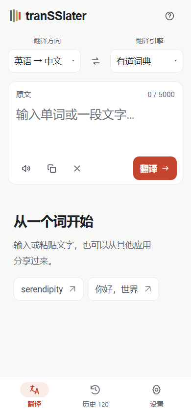
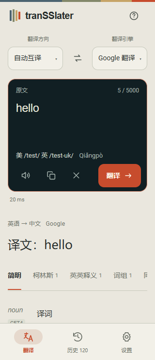
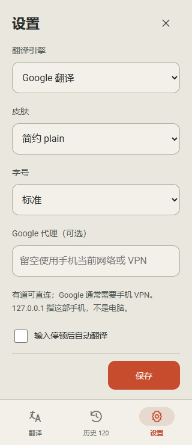

2026-10-21 · 当前改动：Android 网络兼容修复与移动界面适配。此前适配记录
用户报告手机上三个引擎均无法连接，并要求界面摆脱僵硬的桌面移植。本次保留简约/远点的品牌色、历史与导出、三引擎和拼写候选；按 Android 使用场景重排导航、输入与结果、设置、键盘和返回。
| 要求 | 实现 | 验证状态 |
|---|---|---|
| 排查三个服务共同连接失败 | 已确认原统一提示遮蔽底层原因；Android 默认请求改为系统 HttpURLConnection，保留 DNS/TLS/权限/超时原因，后台线程与严格 HTTPS 验证。 | 本机 JVM 使用相同 Kotlin 网络实现访问三个服务均 HTTP 200；55 项 Rust 回归通过。用户设备的精确原始原因尚未获得，不能把 JVM 联网成功视作手机连通证据。 |
| 手机布局 | 精简应用栏、明确翻译按钮、底部三项导航；760px 起为侧栏与输入/结果双栏；48px 触控目标。 | 144 项 Edge 触屏模拟界面检查通过，320/390/844/800px 及两套皮肤已检查。下列为浏览器实现预览，非手机截图。 |
| 失败可恢复 | 具体原因、重试、保留原输入；字符计数与加载按钮。 | 模拟 DNS 失败、重试恢复和草稿保持检查通过。 |
| 移动平台行为 | MainActivity 处理返回与 IME insets；打开设置/历史不自动聚焦文本框。 | Kotlin 编译与 6 项 JVM 测试通过；页面返回逻辑在界面检查通过。物理键盘/IME/系统返回仍需真机确认。 |
浏览器触屏模拟，模拟 IPC 数据。用来检查界面，不证明设备联网。



Android APK · 安装包检查报告 · 构建与验证说明
版本号 4；保留 com.transslater.app 与原签名。发布构建、原签名兼容、DEX 中网络通道保留、ZIP 完整性与 16KB 页对齐均已通过检查；最终 APK 12,922,784 字节。
用户已确认版本 3 的 Google 可用，手机浏览器可访问 dict.youdao.com/jsonapi。已移除有道专有的 Proxy.NO_PROXY，统一使用系统连接策略；保留底层异常且过滤查询文本/凭据。新增路由和异常脱敏回归测试，本机 JVM 8 项测试通过，三个真实服务均 HTTP 200。用户手机上的修复效果仍待覆盖安装验证。
当前 ADB 无连接设备；用户已验证旧版 Google 可用，本次有道修复、系统键盘和返回手势仍需用户设备验证。桌面 JVM 联网与浏览器预览不能替代这些检查。